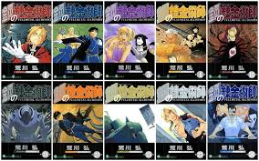

まじで面白い！個人的オススメ漫画！【バトル・アクション】編
[このページは個人的にオススメな漫画をジャンル別に紹介するページです]
漫画1「キングダム」
原泰久による漫画作品。春秋戦国時代の秦国が舞台。
戦争孤児である信が、後の始皇帝となる嬴政と出会い、天下の大将軍を目指し戦場を駆け巡る物語。
コメント…話の内容はもちろん登場キャラクターの個性がとびぬけて面白い!点火の大将軍を目指す信の姿に胸の奥から熱くなれる作品。
胸熱度★★★★☆
個性★★★★★
史実★★★★☆
漫画2「鋼の錬金術師」

荒川弘による漫画作品。幼いころに母をなくしたエルリック兄弟は禁忌とされている人体錬成の代償に体を失った。
兄弟愛溢れる壮大なアクション物語。
コメント…兄弟愛をとても感じられる作品で初めから最後まで完璧な作品！愛、友情、失ったものを等価交換することはできるのか?!
兄弟愛★★★★★
錬金術★★★★★
ストーリー★★★★☆
漫画3「NARUTO（ナルト）」
岸本斉史による漫画作品。里一番の落ちこぼれの主人公うずまきナルト。
己の忍道を貫き火影を目指し仲間とともに成長していく物語。
コメント…仲間とは何なのか、愛されるとはどういうことなのか、とても考えさせれる作品で道徳の教科書としても使えるかも?!
感動★★★★★
忍術★★★★★
ギャグ★★★☆☆